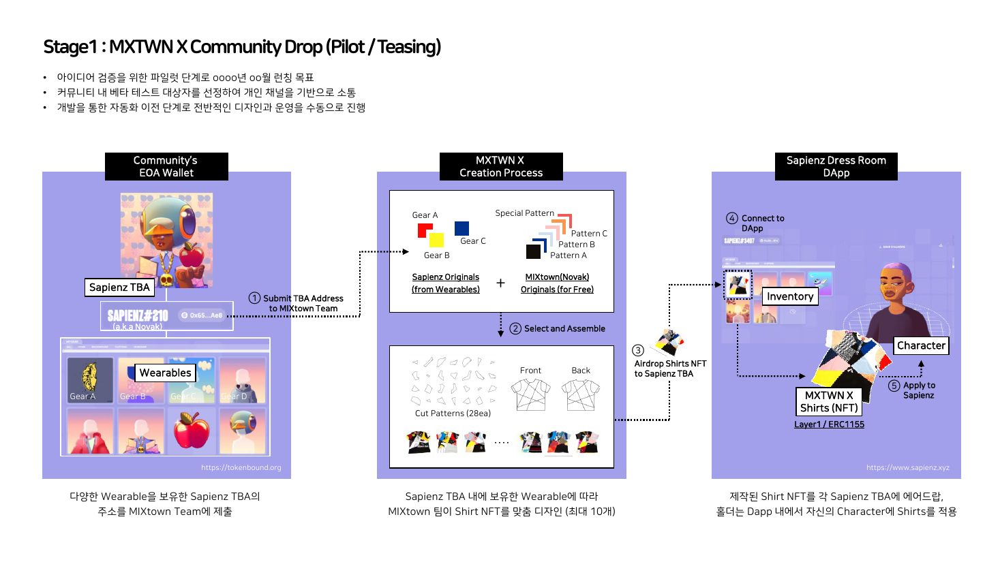
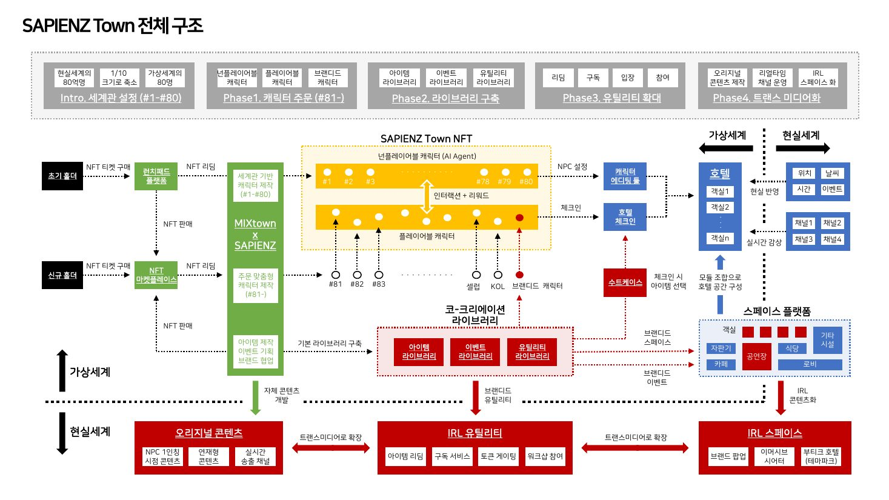

세계는 옷과 공간과 음악으로 새어 나갔다온체인 스토리텔링PART 3

세계관이 있었고 캐릭터가 살았다. 앞의 두 편에서 정리한 이야기다. 이 편은 그 세계가 밖으로 내보낸 것들에 대한 글이다. 확장의 방향은 한 갈래가 아니었다. 영상 연작이 쌓였고, 캐릭터가 옷 브랜드의 화자가 됐고, 호텔의 형태를 한 공간 시스템이 기획됐고, 무대 뒤에 숨겨두었던 캐릭터의 다른 얼굴은 실제 음원이 됐다. 어떤 것은 실물이 됐고 어떤 것은 아이디어로 남았다. 그 갈래들을 순서대로 적는다.
시리즈 안내 : 이 시리즈는 2023년에 진행하던 웹3 기반 코크리에이션 프로젝트를 3년 뒤에 1인칭으로 다시 정리한 것이다. 이 글은 세 편 중 마지막이다. (1) 세계관 (2) 방법론 (3) 확장.
01연작이 도착한 곳
먼저 채널 안에서의 확장이다. 앞선 편에서 소개한 번호 붙은 영상 연작은 회를 거듭하며 길어지고 정교해졌다. 초반의 회차가 캐릭터의 방 안에서 벌어지는 십 초 남짓의 장면이었다면, 후반의 회차는 일 분을 넘는 길이에 여러 세계를 오가는 구성을 담았다.
회차들 사이에는 톤의 진폭이 있었다. 두 얼굴이 처음 열린 여섯 번째 편 다음의 일곱 번째는 아예 대사가 포효뿐이었다. 알파벳을 길게 늘여 지른 함성과 폭발음 하나로 채워진 회차. 평온한 에바를 알던 사람에게는 낯설고, 예고를 기억하는 사람에게는 반가운 장면이었다. 여덟 번째 편의 대사는 반대로 짧았다. 3724번, 준비됐다. 꿈속의 꿈이라는 해시태그가 붙었고, 에바의 출신 컬렉션 커뮤니티의 계정들이 함께 불렸다. 연작이 진행될수록 그 세계의 원주민들이 관객으로 초대되는 빈도가 늘었다. 캐릭터를 빌려온 세계에 캐릭터의 근황을 알리는 일은 예의이기도 했고, 그 커뮤니티가 이 연작의 가장 정확한 관객이기도 했다.
연작의 열 번째 편은 그 도착점이었다. 일 분 이십 초가 넘는 이 영상은 스테이플버스를 향한 헌정의 형식을 하고 있었다. 참조하던 세계였고, 세 번째 타우너의 출신이었고, 이 시리즈 내내 이름이 나온 그 커뮤니티. 채널에서 가장 많은 반응을 받은 게시물도 이 회차였다. 세계관을 처음 연 것이 포탈 영상 열 초였다는 것을 떠올리면, 석 달 사이에 연작이 어디까지 왔는지가 길이에서부터 보인다.
연작이 길어진 것은 담을 것이 많아졌기 때문이다. 캐릭터가 셋이 됐고, 타운 사이의 이동이 생겼고, 소품마다 이력이 붙었다. 세계가 넓어지는 속도에 맞춰 형식이 늘어난 것이라, 이 성장은 계획이라기보다 결과에 가까웠다. 그리고 이 무렵부터 확장은 채널 바깥으로 방향을 틀기 시작한다.
02옷, 캐릭터가 화자가 되는 방식
첫 번째 바깥은 패션이었다. MXTWN X라는 이름의 의류 프로젝트를 기획했다.
시작은 옷이 아니라 캐릭터였다. 세 번째 타우너 노박에게는 디자이너를 꿈꾼다는 설정이 있었다. 그 설정을 실행으로 옮기는 캠페인을 짰다. 노박이 1인칭 화자가 되어, 서울에서 열리고 있던 MSCHF의 전시를 실제로 방문하는 것이다. 전시장 인증샷이 찍혔고, 그들의 대표작인 커다란 빨간 부츠 앞에서의 장면이 남았고, 브랜드 협업에 대한 그들의 메시지를 소개하는 글이 캐릭터의 목소리로 나갔다. 디자이너를 꿈꾸는 캐릭터가 동경하는 브랜드의 전시를 보러 가는 이야기. 관객에게는 세계관의 한 장면이지만, 실행의 측면에서는 다음 단계를 예고하는 티저 캠페인이었다.
이 캠페인의 구조를 나는 지금도 좋아한다. 브랜드가 모델을 고용해 화보를 찍는 것이 아니라, 세계관의 캐릭터가 자기 꿈을 따라 움직이는 동선이 그대로 브랜드의 서사가 된다. 앞선 편에서 캐릭터의 성격을 소유물로 보여준다고 했는데, 여기서는 캐릭터의 꿈을 행보로 보여준 셈이다. 화자가 캐릭터라는 것은 말투의 문제가 아니라 관점의 문제였다. 같은 전시를 소개해도 프로젝트 명의로 쓰면 홍보가 되고, 디자이너 지망생 캐릭터의 눈으로 쓰면 동경의 기록이 된다.
옷 자체의 기획도 단계로 짜여 있었다. 프리스테이지가 캐릭터의 현실 행보로 관심을 모으는 티저 구간이고, 스테이지 하나가 커뮤니티를 상대로 한 파일럿 드롭, 그다음 스테이지가 일반 소비자로 넓히는 드롭이다. 단계마다 상대가 다르고 물량이 다르다. 세계관 프로젝트의 확장이라기보다 브랜드 런칭의 문법에 가까운 설계였고, 실제로 재단 도면까지 내려간 기획이었다. 실물 의류와 온체인 증표를 묶는 구조는 그 무렵 여러 팀이 실험하던 방향이었는데, 우리의 차이는 화자였다. 옷을 파는 주체가 회사가 아니라 세계관 속 인물이라는 것. 실제 협업을 논의하는 단계에서 다양한 아이디어들을 실험하고 협력했고, 그 과정 자체가 캐릭터의 서사에 쌓였다.

이 장표 한 장에 이 프로젝트의 문법이 다 들어 있다. 왼쪽 끝과 오른쪽 끝이 모두 캐릭터의 계정이다. 옷은 공장에서 소비자에게 가는 것이 아니라, 캐릭터의 소지품에서 출발해 캐릭터의 옷장으로 돌아온다. 앞선 편에서 성격의 정본이 인벤토리라고 썼는데, 상품의 유통조차 인벤토리에서 인벤토리로의 이동으로 설계한 것이다.
03공간, 호텔이라는 형태
두 번째 바깥은 공간이었다. 스테이플버스의 사피언즈 팀과 논의하던 아이디어 중에 사피언즈 타운이라는 이름이 있었다. 확정된 프로젝트가 아니라 논의 단계의 기획이었다는 것을 먼저 적어둔다. 다만 그 기획안에 담긴 구조는 이 시리즈에서 가장 정교한 설계였고, 그래서 여기 기록해둘 가치가 있다.
전제는 스케일의 은유였다. 세계 인구를 100명의 마을로 줄여 보는 오래된 상상이 있다. 기획안은 그 위에 이렇게 얹었다. 80명의 운영자가 굴리는 아주 특별한 호텔. 80개의 오리진 캐릭터로 시작해서, 그 뒤로는 하루에 하나씩 새 캐릭터가 발행되며 자라는 세계. 현실 세계에서 온 방문객과의 만남이 그 호텔의 콘텐츠가 된다.
구조도는 다섯 축으로 그려졌다. 캐릭터 축에서는 인물을 세 갈래로 나눴다. 플레이어블 캐릭터, 브랜디드 캐릭터, 그리고 논플레이어블 캐릭터. 그 마지막 갈래의 라벨 옆에 괄호로 이렇게 적혀 있었다. AI 에이전트. 2024년 1월의 기획안이 NPC를 AI 에이전트로 명시하고 있었던 것이다. 라이브러리 축에서는 아이템과 이벤트와 유틸리티의 라이브러리를 쌓기로 했고, 확장 축에는 워크숍과 브랜드 팝업, 이머시브 시어터, 부티크 호텔까지 현실 체험의 목록이 이어졌다. 콘텐츠 축은 1인칭 시점 콘텐츠와 연재물, 실시간 콘텐츠로 트랜스미디어화의 방향을 잡았다.

호텔이라는 은유는 장식이 아니라 동선이었다. 리셉션에서 체크인을 하고, 체크인할 때 수트케이스에서 아이템을 고르고, 번호가 붙은 방을 배정받고, 키오스크에서 무언가를 사고, 배경에는 현실을 미러링하는 날씨와 날짜와 시간이 흐른다. 채널 네 개가 실시간으로 상영되는 화면 구성까지 기획안에 그대로 적혀 있었다. 관람의 동선이 아니라 투숙의 동선이다. 방문객은 관객이 아니라 투숙객이고, 투숙객은 서비스를 받는 동시에 그 호텔의 이야깃거리가 된다. 앞선 편의 언어로 옮기면, 체크인이 곧 빈 자리에 들어오는 절차였다.
상거래의 축도 같은 그림 안에 있었다. 티켓을 사고 되찾는 흐름, 구독과 참여, 마켓플레이스 연결까지. 호텔의 비유로 옮기면 숙박권과 멤버십과 기념품 가게다. 세계관과 운영과 수익 구조가 각각의 문서가 아니라 구조도 한 장에 함께 그려져 있다는 것이 이 기획안의 성격이었다. 그리고 그 구조도의 한 켠에는 두 세계의 이름이 교차하는 라벨이 붙어 있었다. 논의가 어디까지 갔는지를 보여주는 흔적이다.
이 기획이 실행까지 가지는 않았다. 그런데 이 이야기에는 후일담이 있다. 올해 봄, 나는 이 구조를 작은 웹 프로토타입으로 직접 지어봤다. 그 세계의 IP는 잇지 않고 작동 구조만 옮긴 실험이었다. 가상 호텔이 있고, 캐릭터 여섯이 저마다의 성격과 관심사를 갖고 자율적으로 움직인다. 서로 만나 대화하고, 관계가 쌓이고, 하루의 일을 일기로 쓰고, 소셜 글을 남긴다. 방문자는 체크인하면서 수트케이스의 열 가지 아이템 중 몇을 고르고, 그 선택이 머무는 동안의 사건에 영향을 준다. 일곱 개의 공간이 있고, 브랜디드 캐릭터 하나가 투숙객으로 입주하고, 십 분 단위로 시간이 흐르고, 그 사이 호텔에서 벌어진 일들이 문서로 내보내진다. 기획안의 캐릭터 3분류와 수트케이스와 방과 라이브러리가 화면의 요소로 하나씩 자리를 잡았다.
만들어보고 나서야 보인 것이 있다. 이 구조의 핵심은 호텔이라는 무대가 아니라 기록의 방향이었다. 운영자가 콘텐츠를 만들어 투숙객에게 내려보내는 것이 아니라, 투숙객과 캐릭터들이 지내는 동안 벌어진 일이 위로 쌓여 콘텐츠가 된다. 2024년의 기획안에서 괄호 하나로 적혀 있던 AI 에이전트 NPC가 지금은 실제로 돌아가는 코드가 됐고, 그 코드가 매일 만들어내는 것은 결국 기록이다. 기획서의 문장이 실행 가능한 문장이었는지를 3년 뒤에 확인해본 셈인데, 적어도 그 괄호는 진심이었다.
04음악, 무대 뒤의 에바가 낸 소리
세 번째 바깥은 음악이었다. 앞선 편에서 예고를 남겨둔 그 이야기다.
에바의 프로필에는 처음부터 무대 뒤에서 기다리는 또 다른 자신이 예고돼 있었고, 연작에서 그 다른 얼굴이 헤비메탈의 세계로 열렸다. 그 설정은 예고로 끝나지 않았다. 해가 바뀐 뒤 채널에는 에바가 바이닐 가게로 향하는 장면이 올라왔고, 얼마 지나지 않아 로커 에바(Rocker Eva)의 첫 싱글이 나왔다는 공지가 떴다. 곡명은 메탈 블러드(Metal Blood). 새 잎을 뒤집는 첫걸음이라는 문장이 붙어 있었다. 다른 에바의 음악이 실제 싱글로 만들어졌고, 발매까지 갔다. 크레딧에는 작사와 작곡과 편곡이 전부 캐릭터의 이름으로 올라갔다. 크립토펑크 3724번, 에바.
배포의 방식도 이 세계관의 문법을 따랐다. 음원은 민팅으로 풀렸고, 선착순 서른 명에게는 한정판이 무료였다. 발매는 서로 다른 두 체인에서 동시에 이루어졌다. 음악 파트너의 플랫폼과 또 다른 음악 NFT 플랫폼, 각각 다른 체인 위에서. 첫 편에서 다룬 멀티체인 논의가 이 작은 발매에서 실물이 된 셈이다. 캐릭터의 노래를 소유의 형태로 배포한 것, 이 시리즈의 문법 그대로다. 노래가 스트리밍 플랫폼에 올라 있다는 사실보다, 그 노래의 저작자 칸에 픽셀 캐릭터의 이름이 적혀 있다는 사실이 이 프로젝트다운 부분이었다. 캐릭터 설계 단계에서 심어둔 이중 설정 하나가 프로필의 한 줄에서 시작해, 연작의 회차를 지나, 저작권 등록이 붙은 실물까지 걸어간 경로. 세 편에 걸쳐 다룬 방법들이 한 캐릭터 안에서 끝까지 작동한 사례로 이만한 것이 없다.
다만 이 음원은 전체 기획의 작은 한 조각이었다. 스포트라이트를 여기에 다 줄 일은 아니다. 같은 시기에 여러 갈래의 확장이 동시에 굴러가고 있었고, 음악은 그중 가장 먼저 실물이 된 갈래였을 뿐이다.
05열린 채로 남은 것들
확장의 갈래들을 다시 세어본다. 영상 연작은 채널 안에 쌓였다. 패션은 티저 캠페인과 파일럿 기획까지 갔다. 공간은 다섯 축의 구조도로 남았다. 음악은 발매된 실물이 됐다. 갈래마다 도달한 지점이 다르다.
해가 바뀌던 무렵 채널에는 짧은 예고 하나가 올라왔다. 2024 티저라는 제목 아래, MIXtown의 포탈들이 세계 곳곳에서 열린다, 다음에는 무슨 일이 벌어질까, 라는 두 문장. 열린 질문의 형태를 한 예고였다. 그 질문 뒤로 어떤 갈래는 실물이 됐고 어떤 갈래는 설계로 남았다는 것이 이 편의 내용이다.
이 지형을 지금의 나는 이렇게 읽는다. 코크리에이션을 표방한 프로젝트의 확장은 원래 울퉁불퉁할 수밖에 없다. 혼자 만드는 것이 아니라 협업의 상대가 있는 갈래들이라, 진도는 우리 손에만 있지 않았다. 그리고 빈 자리를 파는 방법론의 세계에서는, 기획안 자체가 산출물의 한 형태다. 채워지지 않은 자리가 상품이었던 것처럼, 실행되지 않은 기획은 실패의 기록이 아니라 열린 채로 보관된 설계였다.
그 보관이 헛되지 않다는 것을 이번에 확인했다. 호텔의 구조도는 3년을 기다렸다가 다른 이름의 프로토타입으로 살아났다. 형태를 바꿔 살아남는 것은 개념만이 아니다. 설계도도 그렇다.
06시리즈를 닫으며
세 편을 되짚는다. 첫 편은 세계였다. 지워지지 않는 기록 위에 세계를 짓겠다는 정의, 타운과 포탈, 문서가 아니라 장부가 정본이 되는 구조. 둘째 편은 방법이었다. 정의보다 생활을 먼저 내보내는 순서, 인벤토리로 성격을 만드는 설계, 빈 자리를 상품으로 세우는 발상. 셋째 편은 그 세계가 새어 나간 자리들이었다. 옷과 공간과 음악, 그리고 열린 채로 보관된 설계들.
이 프로젝트를 정리하며 가장 오래 들여다본 것은 결과 목록이 아니라 문장들이었다. 2023년의 기획서와 발행문에 적힌 문장 중 어떤 것은 그 해에 이미 실물이 됐고, 어떤 것은 3년 뒤에 다른 모습으로 도착했고, 어떤 것은 아직 오고 있다. 온체인 히스토리라는 말로 겨냥했던 것, 그러니까 기록이 쌓여 저절로 이야기가 되는 세계는 여전히 진행 중인 질문이다. 다만 그 질문을 다루는 내 도구가 달라졌다. 그때는 블록체인 위에 캐릭터를 세웠고, 지금은 파일 시스템 위에 에이전트를 세운다. 재료가 바뀌어도 하는 일은 비슷하다. 계정을 만들고, 성격을 붙이고, 기록이 쌓이게 두고, 그 기록을 읽는다.
무대에서 이 프로젝트의 이름을 말한 것은 한 번이었다. 이제 그 한 번이 세 편의 기록이 됐다. 발표가 예고했던 세계관과 캐릭터 설계와 실제로 만든 것들을 여기까지 적었으니, 그날의 약속은 지킨 셈이다.